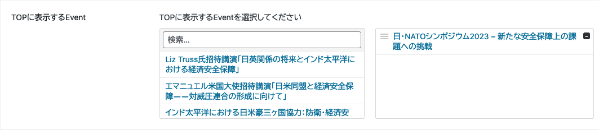
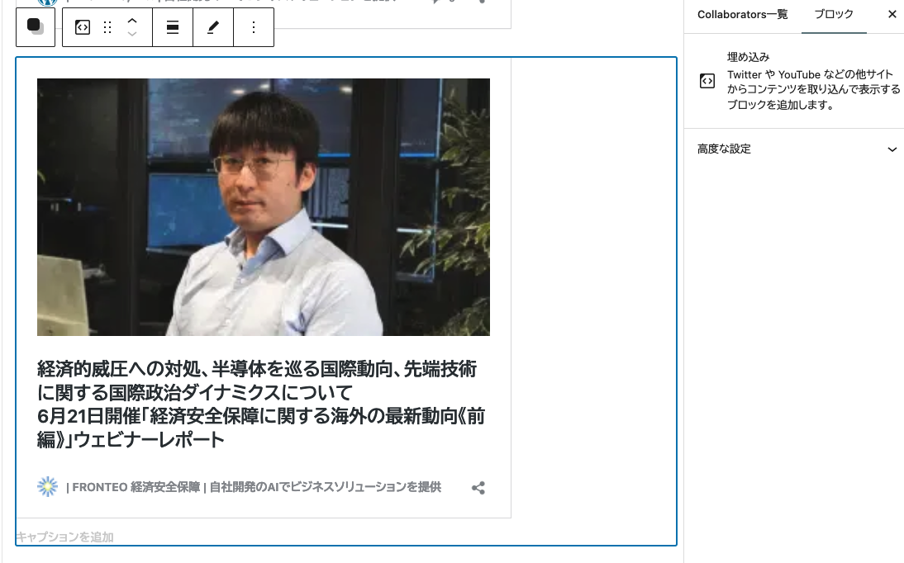
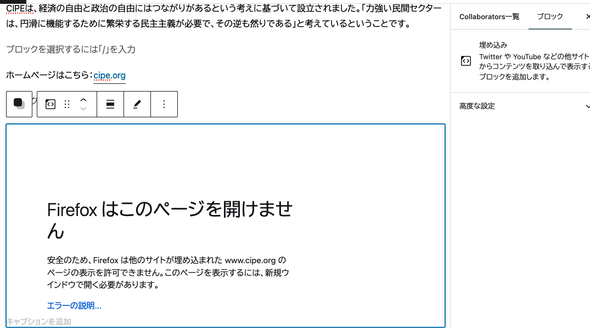

1 バグ修正
1.1 ボタンリンク不備１
Newsで「経済安全保障」タグを選択した状態 からページ下部の次ページに進むボタン（「２」か「→」）を押すと、何故かトップページに戻る
News1.2 ボタンリンク不備２
英語のCollaborator一覧ページ から個別企業ページに飛ぶと日本語ページが表示される（英語ページがちゃんと存在してもこうなる）
Collaborators1.3 カテゴリページ
例えば 経済安保国際連携のカテゴリページ にて，（日本語の内容の準備が後手後手になっている点をご容赦ください）表示形式が少し不自然な状態です．

また，現在，新たにカテゴリを追加して合計10個になっておりますが，カテゴリページは合計７つしかございません．
ここまでは，最初にご依頼した際からある，デフォルトの７カテゴリでした．ここから新たに
- 知的財産法
- 先端技術と安全保障
- 日英米豪印 (QUAD)
を追加しましたので，対応するカテゴリページも用意したく存じます．
1.4 ランディングページの Events が２つ出ちゃう
現在，ランディングページ の Events の部分に，最新の Events を表示するように設定している状況です．

するとこの際，画面左半分に大きく表示された Events が，画面右半分に元々表示されていた Events と重複してしまいます．
些細なことですが，こちらの修正をお願いできますならば，ぜひお願いしたく存じます．
2 デザイン変更
2.1 研究員プロフィールの表示
各ページのどこか（左側？）に、当該記事に関係する研究員のプロフィールが表示されるようにしたい．
例えば こちらの News 記事 は，内部で NEWS REPORT AUTHOR として「関連する専門家」を選択しているので，該当する専門家のページ では下部にこの記事が表示される．
しかし，News 記事本体のページでは，（記事本文で触れない限り）この情報は用いられない．
顔写真と肩書きを簡単にまとめたプロフィールカードのようなものを作成できるようにし，関連づけられた News 記事と Reports 記事，そして 授業一覧 に，表示されるようにしたく存じます．
2.2 ２つ以上のカテゴリの選択
News 記事と Reports 記事，そして Events には，現状カテゴリは１つしか表示できません．これはカテゴリの標準的な機能に則ったものだと思います．
そこでですが，やはり２つ以上選択できるようにしたいので，「主要カテゴリ」と「副次カテゴリ」というように順序をつけた形でも良いので，何かしら自然な形で複数のカテゴリを選択できると，記事の分類がしやすくなると考えます．
もし，カテゴリページ でリストされる際に不具合が生じそうならば，「副次カテゴリについては，カテゴリページには表示しない」という形でも良いと考えます．
3 ビジュアルエディターの機能増強
3.1 記事ブロックの追加
例えば この記事 では，リンクの埋め込みが美しく表示されています．これは標的リンクが WordPress でサポートされているためです．
こちらのページ では FRONTEO 社のウェブサイト上の記事 へのリンクを貼っていますが，FRONTEO 社の HP も WordPress で作成されているためか，うまく記事カードが作成されて埋め込まれています．
対応するビジュアルエディターのブロックは，「埋め込み」ブロックです．

ですが，例えば このページ であるように，標的リンクが WordPress ではない場合，リンクが縮退してただの文章となってしまいます．また，本サイトのリンクの様式とも違うため，一見してリンクともわからない状態です．
これのビジュアルエディターでのブロックは変わらず「埋め込み」ブロックです．

これをうまく表示させる方法として，１つは 外部プラグインである Embedly を導入することだと考えています．まさに私がここで使っているものです．
We Are CIPE - Center for International Private Enterpriseですが下部に Embedly のウォーターマークが表示されるので，もし可能であれば自前でこの機能が用意できましたら，ご相談したく存じます．